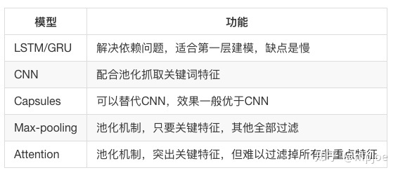

文本分析学习笔记
2020-03-30
1 文本分析
1.1 语义粒度和文本长度
语义粒度是指对文本是否分词，以词还是以字来表示一个句子的输入特征。一般来讲，我们都需要对他们进行尝试，只要效果不相差太多，我们都需要保留，为最后的模型融合增加差异性。
文本长度一般用占比95%或者98%的长度最为最大长度，对超过最大长度的句子进行截取，不足的进行填充(padding)。
文本的表示通过词向量的表示方式，把文本数据从高纬度高稀疏的神经网络难处理的方式，变成了类似图像、语音的的连续稠密数据,此时神经网络就好处理了.
深度学习文本分类模型概括来说，主要有五大类模型： 1、词嵌入向量化：word2vec，FastText等 2、卷积神经网络特征提取：Text-CNN，Char-CNN等 3、上下文机制：Text-RNN，BiRNN，RCNN等 4、记忆存储机制：EntNet，DMN等 5、注意力机制：HAN等
library(DiagrammeR)
grViz("
digraph{
# a 'graph' statement
graph [overlap = true, fontsize = 10]
# several 'node' statements
node [shape = box,
fontname = Helvetica]
文本; embedding; 网络模型LSTM等; 分类器; 分类概率
# several 'edge' statements
文本->embedding embedding->网络模型LSTM等 网络模型LSTM等->分类器 分类器->分类概率
}
")